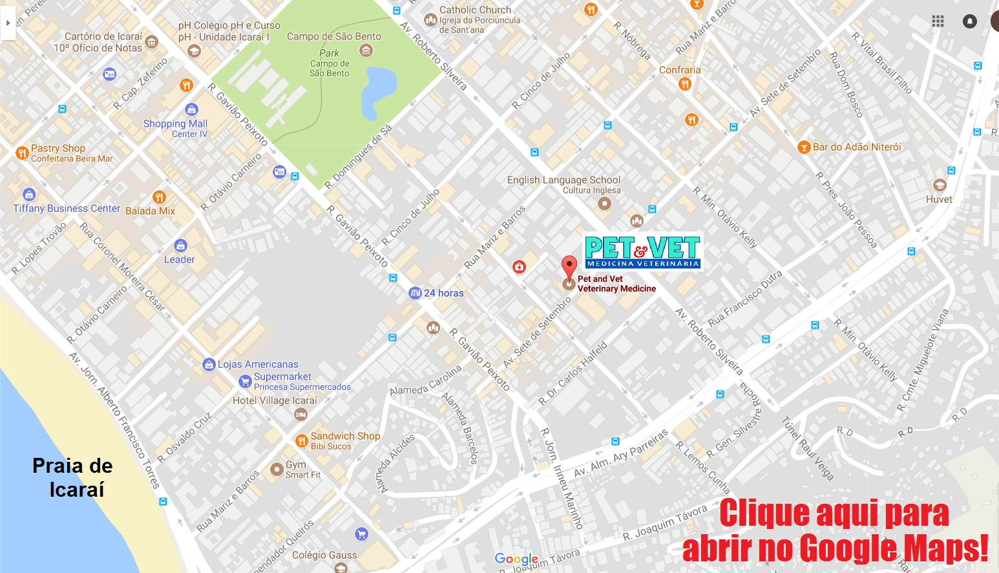

Pet & Vet Veterinary Clinic - Icaraí, Niterói
Contact Us
We're looking forward to hearing from you and meeting you!
Telephone: (21) 2711-7557 and 2711-8898
Email: pet_vet@ibest.com.br, veterinariapetevet@gmail.com
Opening Hours: 24 hours! We're always open!
How to find us:
Av Sete de Setembro, 65 - Icaraí - Niterói - RJ - CEP 24230-250
Click the image below to open in Google Maps:
(21) 2711-8898 | (21) 2711-7557
pet_vet@ibest.com.br
Av. Sete de Setembro, 65 • Niterói / RJ
Pet & Vet Niterói © 2017 | Veterinary Clinic
Visit us on Facebook